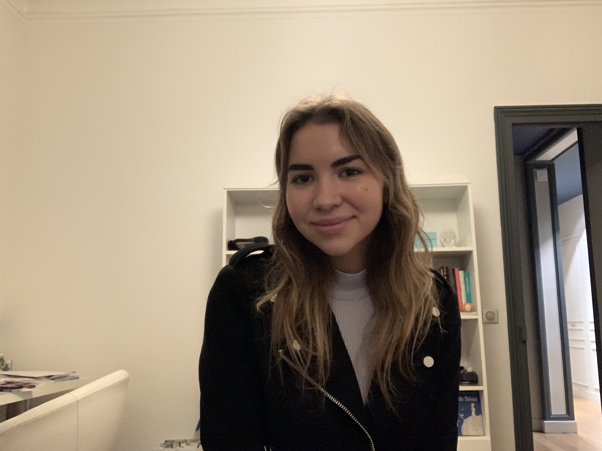

🧚‍♀️WELCOME TO MY PROFILE!🧚‍♀️
Bonjour! My name is Chloe Lalanne. I was born in Singapore and was raised in France. I have led an international life as I lived in 3 different countries which are: Singapore, Switzerland and France🇫🇷. I also love to travel and have visited over 20 countries around the world, from Mexico to Australia! Throughout my travels I have become curious and open-minded. I currently live in Cergy (in France), where I'm studying in the Bachelor of Business Administration at ESSEC Business School.
ESSEC Business School✈️TRAVEL✈️
I love travelling, as it has helped me discover new cultures as well as developing my creativity and open mind. I believe travelling gives so many opportunities such as meeting new people, seeing new landscapes, tasting new types of food.

MALLORCA, SPAIN🇪🇸
I have visited many places troughout my life🗺, and the ones I prefered were Mexico, Australia and Italy, where the weather is warm. However, I also love colder places such as Amsterdam, Copenhagen and skiing in the French Alps. I tend to like all the places I visit as each one is unique.

AMSTERDAM, NETHERLANDS🇳🇱
🎨ARTS🎨
Throughout my life, I've always practiced some form of art, whether it was drawing, painting, practicing piano, dancing. Those activities have helped me express my feelings in different ways, which was very liberating.
I don't practice those activities as much as I used to, but I still draw from time to time as it help me express myself and experiment with the different creative ideas that come to my mind.
🏄‍♀️SPORTS🏄‍♀️
I'm someone who needs to be very active, and sports have always been part of my life. I have done many sports such as dance, basketball, athletics, skiing, swimming, fencing, etc. My favorite ones so far are skiing, athletics and swimming.
I come from a family who loves watching all kinds of sports on tv. So from a young age, I started watching football and formula 1 with my father. I am now very passionate of those 2 sports and it's also a time I get to spend together with my family, which is very enjoyable!